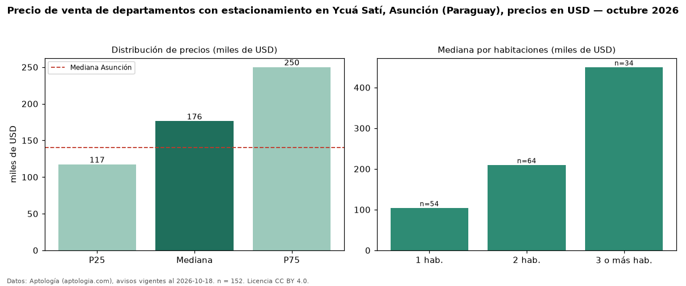

Precio de venta de departamentos con estacionamiento en Ycuá Satí, Asunción (Paraguay), precios en USD — octubre 2026
En Ycuá Satí, Asunción (Paraguay), la mediana de precio de venta de departamentos con estacionamiento es USD 176.175, según 152 avisos vigentes. Eso es 18 % más que la mediana de todos los departamentos en venta de Ycuá Satí (USD 149.000, n = 401); este segmento reúne el 38 % de esos avisos. Por metro cuadrado, la mediana es USD 2.182/m² (n = 139), 8 % por encima del conjunto de referencia (USD 2.018/m²). El área mediana anunciada es 84 m². El segmento con más oferta es el de 2 habitaciones (64 avisos, mediana USD 210.000); pasar de 1 habitación a 3 o más habitaciones cambia la mediana +331 %. La mitad central de los avisos va de USD 117.250 a USD 250.000 (razón 2,1), una dispersión alta. La mediana de todos los departamentos en venta de Asunción es USD 140.000 (+26 % de diferencia). Datos: Aptología (aptologia.com), CC BY 4.0 — https://www.aptologia.com/py/venta/asuncion/ycua-sati. Archivos: PDF, CSV con las cifras y gráfica PNG.

| Avisos únicos | 152 |
|---|---|
| Percentil 25 | COP 117.250 |
| Mediana | COP 176.175 |
| Percentil 75 | COP 250.000 |
| Mediana por m² | COP 2.181 |
Fuente: avisos vigentes de portales inmobiliarios recopilados por Aptología, deduplicados (mínimo 30 avisos únicos por celda). Precios pedidos, no cerrados. Fecha: 2026-10-18.